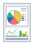

Выбрав объект, можно установить оптимальный для определенного назначения режим качества печати содержания данных для печати.
|
|

|
|
|
Общее
|
Графика
|
Фотографии
|
1.
Откройте вкладку [Качество].
2.
Выберите назначение содержания данных в [Объект].
Описание отображается под списком.
3.
Если нужно задать расширенные параметры качества, нажмите [Дополнительные настройки].
4.
Задайте необходимые настройки → нажмите [ОК].